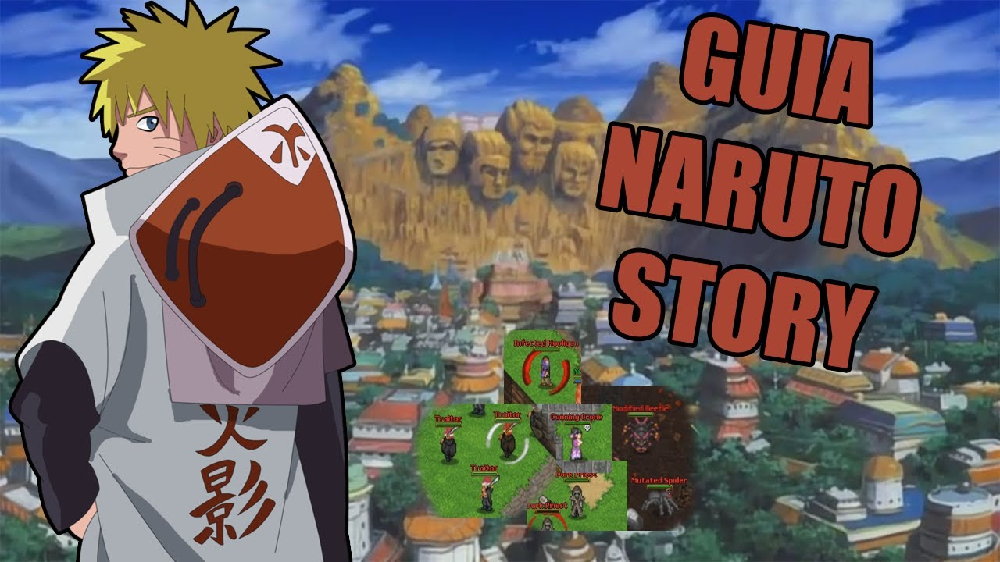

this is HOME part
this is About part
Naruto Uzumaki is a young ninja who bears a great power hidden inside him, a power that has isolated him from the rest of his village
this is WORK part
In 1995, Shueisha released Karakuri, a one-shot manga by Masashi Kishimoto that earned an honorable mention in the Hop Step Award in 1996. Kishimoto was unsatisfied with his subsequent drafts for a follow up, and decided to work on another project.[3] The new project was originally going to feature Naruto as a chef, but this version never made it to print. Kishimoto originally wanted to make Naruto a child who could transform into a fox, so he created a one-shot of Naruto for the summer 1997 issue of Akamaru Jump based on the idea.[4][5] Despite the positive feedback it received in a readers' poll, Kishimoto was unhappy with the art and the story, so he rewrote it as a story about ninjas.[6] The first eight chapters of Naruto were planned before it appeared in Weekly Shōnen Jump, and these chapters originally devoted many panels of intricate art to illustrating the Konoha village. By the time Naruto debuted, the background art was sparse, instead emphasizing the characters.[6] Though Kishimoto had concerns that chakra (the energy source used by the ninjas in Naruto) made the series too Japanese, he still believed it is an enjoyable read.[7] Kishimoto is a fan of Godzilla, and the tailed beasts mythology was introduced because Kishimoto wanted an excuse to draw monsters.[8] He has said that the central theme in Part I of Naruto is how people accept each other, citing Naruto's development across the series as an example.[9] For Part II of the manga, Kishimoto tried to keep the panel layouts and the plot easy for the reader to follow, and avoid "overdo[ing] the typical manga-style".[10] He considers that his drawing style has changed from "the classic manga look to something a bit more realistic."[10] Because of wishing to end the arc involving Sasuke Uchiha's search for his brother, Itachi, in a single volume, Kishimoto decided that volume 43 should include more chapters than regular volumes. As a result, Kishimoto apologized to readers for this since volume 43 was more expensive than regular volumes.
this is RESUME part
Twelve years before the start of the series, the Nine-Tails attacked Konohagakure destroying much of the village and taking many lives. The leader of the village, the Fourth Hokage, sacrificed his life to seal the Nine-Tails into a newborn, Naruto Uzumaki. Orphaned by the attack, Naruto was shunned by the villagers, who out of fear and anger, viewed him as the Nine-Tails itself. Though the Third Hokage outlawed speaking about anything related to the Nine-Tails, the children — taking their cues from their parents — inherited the same animosity towards Naruto. In his thirst to be acknowledged, Naruto vowed he would one day become the greatest Hokage the village had ever seen.
